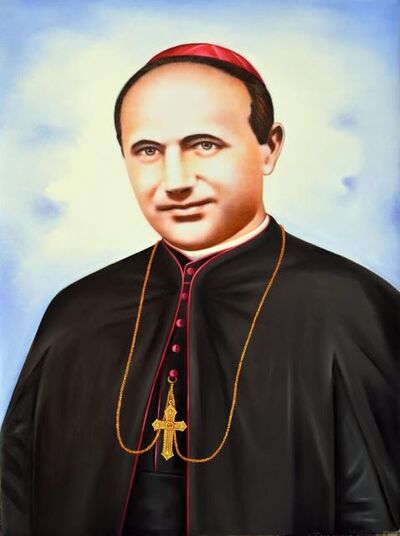
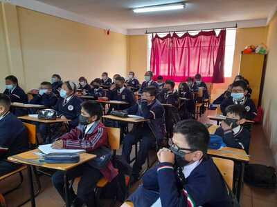
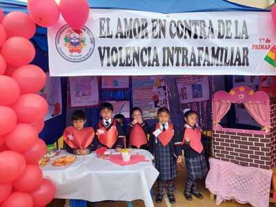
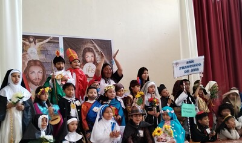

.png)
La Unidad Educativa Parroquial San Jose tiene sus raíces en la visión extraordinaria del Padre San José Marello, un líder religioso inspirado por su profunda fe cristiana y dedicación a la educación. Fundado con un propósito divino en 1945, en la hermosa ciudad de La Paz, Bolivia, el colegio ha sido un faro de luz educativa durante más de siete décadas. Desde sus modestos inicios, ha crecido y florecido, convirtiéndose en un refugio donde la enseñanza y los principios cristianos se entrelazan para formar generaciones de estudiantes comprometidos con la excelencia y la fe. |
 |
|  | La misión de la Unidad Educativa Parroquial San Jose es trascender más allá de la enseñanza académica convencional. Nos esforzamos por brindar una educación integral que abrace los valores cristianos fundamentales. Buscamos inspirar a nuestros estudiantes a desarrollar sus mentes, corazones y almas, fomentando un profundo amor por Dios y la humanidad. Nuestra misión es formar líderes éticos y visionarios, equipados con sabiduría y compasión, capaces de influir positivamente en el mundo que los rodea. |
Enraizados en nuestra identidad cristiana, los valores que guían a la Unidad Educativa Parroquial San Jose reflejan el amor, la fe y la excelencia. Nuestra comunidad educativa se rige por la fe en Dios como base espiritual, así como por la importancia del amor al prójimo. Fomentamos la excelencia académica con un enfoque en el servicio, la humildad y la integridad. Valoramos la diversidad como una manifestación de la creación divina, promoviendo la inclusión y el respeto por la singularidad de cada estudiante. |
 |
|  | Nuestra visión es la de ser reconocidos no solo como un centro educativo cristiano, sino como un faro de excelencia en la educación integral. Visualizamos un colegio donde los estudiantes no solo adquieren conocimientos, sino que también se sumergen en un ambiente que nutre su carácter y fortalece su conexión con la fe cristiana. Aspiramos a ser una fuente de inspiración para la comunidad, extendiendo nuestro impacto más allá de las aulas y contribuyendo al bienestar general de la sociedad. |